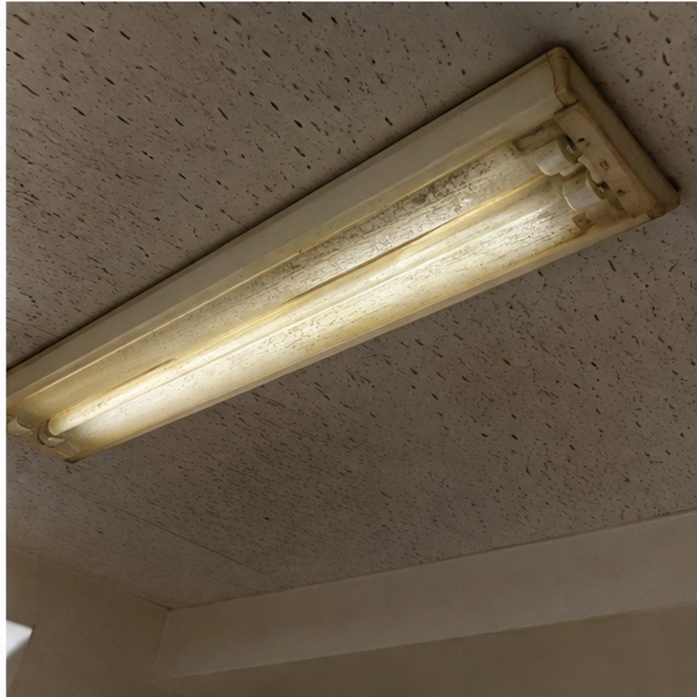

「蛍光灯をLEDにしたいけれど、結局いくらかかるのか分からない」——検索してこのページにたどり着いた方は、きっとそう感じているのではないでしょうか。この記事では、LED化の費用がどのように決まるのかを、すぐプロの実際の料金を交えながら解説します。
蛍光灯をLEDに交換する費用は、「電球だけ交換するか」「照明器具ごと交換するか」という交換方法によって変わります。
【すぐプロの料金目安】
- いずれも部材込みの目安です
- 6灯・6台以上、店舗・工場のLED化は現地確認のうえ個別お見積りです
- 既存器具の状態や配線状況により、工事内容・料金が変わる場合があります
「蛍光灯からLEDにするなら必ず3,000円」というわけではありません。3,000円/灯〜は電球・LED交換の料金、4,500円/台〜は照明器具ごと交換する場合の料金で、対象が異なります。次の章で、この2つの違いを詳しく説明します。
蛍光灯をLEDに交換する方法は、大きく2つあります
① 既存の照明器具を活かして、LEDランプだけ交換する
今ある照明器具はそのままに、中の蛍光灯だけをLED仕様のランプに交換する方法です。器具本体を交換しない分、費用を抑えやすいのが特徴です。ただし、既存の器具がLEDランプに対応しているか、安定器（蛍光灯を点灯させるための部品）の状態はどうかなど、事前の確認が必要です。すぐプロの「電球・LED交換」（3,000円/灯〜）は、主にこの方法を想定した料金です。
② 照明器具ごとLED照明に交換する
器具本体を、最初からLED仕様として作られた照明器具に交換する方法です。初期費用は①より高くなりますが、器具自体が新しくなるため、今後の交換の手間が減り、明るさや安全性の面でも安心感があります。器具が古くなっている場合や、安定器の劣化が見られる場合は、こちらの方法をおすすめすることがあります。すぐプロの「照明器具交換」（4,500円/台〜、戸建て簡易LED）は、この方法の料金です。
LED化の費用は、何によって決まる？
LED化の費用は、主に次のような要素の組み合わせで決まります。
- LEDランプ・LED照明器具などの部材費
- 既存器具からの取り外し・新しい器具の取り付け作業費
- 配線の確認、必要に応じた電気工事
- 高い場所での作業（脚立や高所作業車が必要な場合）
- 出張費（すぐプロは現地調査・出張相談を原則無料でお受けしています）
このうち、部材費と基本的な交換作業費をまとめた目安が、先ほどご紹介した「3,000円/灯〜」「4,500円/台〜」です。配線工事や高所作業が必要になる場合は、状況に応じて別途ご案内します。
【料金シミュレーション】何灯・何台でいくら？
実際にどのくらいの金額になるか、単価をもとにした目安です。
| 電球・LED交換 | |
|---|---|
| 1灯 | 3,000円〜 |
| 3灯 | 9,000円〜 |
| 5灯 | 15,000円〜 |
| 6灯以上 | 現地確認のうえ個別お見積り |
| 照明器具交換（戸建て簡易LED） | |
|---|---|
| 1台 | 4,500円〜 |
| 3台 | 13,500円〜 |
| 5台 | 22,500円〜 |
| 6台以上 | 現地確認のうえ個別お見積り |
※上記は現在の単価を単純に掛け合わせた目安です。実際の工事では、配線の状況・器具の劣化・高所作業の有無などにより金額が変わることがあります。正式な金額は、現地確認（または写真でのご相談）のうえ、工事前に必ずご説明します。店舗・工場のLED化は、規模や現場条件により個別お見積りです。
費用を抑えたいときに、まず確認したいこと
できるだけ費用を抑えたい場合、依頼する前に次のような点を確認しておくと、すぐプロとの相談もスムーズです。
- 今の照明器具は、そのまま使える状態か
- 器具自体が古くなっていないか（変色・異音・点灯までの時間が長いなど）
- ランプ交換だけで済むか、電気工事が必要か
- 脚立で届く高さか、高所作業が必要か
- 何灯・何台まとめて交換するか（まとめての方が効率的な場合があります）
- 店舗・工場の場合、営業時間や生産への影響をどう抑えるか
すぐプロでは、写真を送っていただくだけでも、ある程度の目安をお伝えできます。「まず聞いてみる」ところから始めていただいて大丈夫です。
LED化の前に、知っておきたい注意点
蛍光灯は、「水銀に関する水俣条約」の国際決定に基づき、2027年末までに製造・輸出入が終了することが経済産業省・環境省から公表されています。「まだ点くから大丈夫」と感じる場合でも、器具自体の状態は別に確認しておくことをおすすめします。
また、大手照明メーカーも、直管形LEDランプは「工事不要」とうたわれる製品であっても、既存の器具のタイプ（グロー式・ラピッドスタート式・Hf式など）に合わないものを取り付けると、発熱などのトラブルにつながる可能性があると注意を呼びかけています※1。器具とランプの組み合わせは、専門知識をもって確認することが大切です。

なぜ、個人宅・店舗・工場で費用が変わるのか
個人宅の場合
- 照明器具の種類・台数
- 天井の高さ
- 既存器具の状態
店舗の場合
営業時間中の施工が必要かどうかで、対応方法が変わります。すぐプロでは、閉店後や営業への影響が少ない時間帯での施工もご相談いただけます。
- 高所照明・看板照明の有無
- バックヤードの配線状況
- 複数台をまとめて交換するか
工場の場合
天井が高く、大型の照明が使われていることが多いほか、機械や設備との位置関係、生産ラインを止めずに施工する必要があるかどうかも、費用や工期に影響します。
- 天井高・大型照明
- 高所作業の有無
- 機械・設備との干渉
- 稼働を止めない施工の可否
すぐプロが選ばれる理由
よくある質問
まとめ
蛍光灯のLED化費用は、「ランプだけ交換するか」「器具ごと交換するか」で大きく変わります。すぐプロでは、電球・LED交換を3,000円/灯〜、戸建て簡易LEDの器具交換を4,500円/台〜（いずれも部材込み）を目安にご案内しています。ただし、器具の状態や配線、設置場所によって工事内容は変わるため、最終的な金額は現地確認（または写真でのご相談）のうえ、工事前に必ずご説明します。
「これくらいで聞いていいのかな」と迷ったら、まずは写真を送ってご相談ください。
※1 出典：パナソニック「直管LEDランプは工事不要？ いいえ！蛍光灯への取付には注意が必要です！」（https://www2.panasonic.biz/jp/lighting/renewal/straight/）
蛍光灯の製造終了に関する情報：経済産業省・環境省 公表情報に基づく